- 515. Szabad-e előzni, ha az előzés a szembejövő forgalmat zavarja? #703503
- Nem.
- Igen.
- 516. Szabad-e előzni, ha az előzni kívánó jármű előzését már egy másik jármű megkezdte? #703504
- Nem.
- Igen.
- 517. Szabad-e előzni, ha a megelőzni kívánt jármű előzési szándékot jelzett? #703505
- Nem.
- Igen, ha még nem kezdte meg az előzést.
- 518. Szabad-e előzni, ha az előzés során a megelőzendő jármű mellett nem lehet megfelelő oldaltávolságot tartani? #703506
- Nem.
- Igen, de csak az egy nyomon haladó járművek előzése esetén.
- Igen, de csak motorkerékpárral.
- 519. Szabad-e előzni, ha az előzés befejezése után a megelőzött jármű elé csak annak zavarásával tud visszatérni? #703507
- Nem.
- Igen, mert ebben az esetben csak az akadályozás tilos.
- Igen, de csak motorkerékpárral.
- 520. Kell-e az előzési szándékot irányjelzéssel jelezni? #703508
- Igen, ha az irányváltoztatással jár.
- Igen, minden esetben.
- Igen, de csak sűrű forgalom esetén.
- 521. Milyen irányból szabad az előzést végrehajtani? #703509
- Általában balról.
- Csak balról.
- A járművezető szabad döntésétől függően balról és jobbról egyaránt.
- 522. Milyen irányból szabad megelőzni az úttest közepén lévő pályán közlekedő villamost? #703510
- Csak jobbról.
- Csak balról.
- Jobbról és balról egyaránt.
- 523. Milyen irányból szabad megelőzni a balra bekanyarodási szándékát irányjelzéssel jelző és ennek megfelelően elhelyezkedő járművet? #703511
- Csak jobbról.
- Csak balról.
- Jobbról és balról egyaránt.
- 524. Szabad-e jobbról megelőzni a figyelmeztető jelzést használó járművet? #703513
- Igen, de csak a többi jármű és a gyalogosok veszélyeztetése nélkül.
- Nem.
- Igen, de csak a többi jármű és a gyalogosok zavarása nélkül.
- 525. Szabad-e a villamos mellett elhaladni olyan megállóhelynél, ahol az utasok fel- és leszállása az úttestről, illetve az úttestre történik? #714872
- Nem.
- Igen.
- 526. Szabad-e előzni közvetlenül a kijelölt gyalogos-átkelőhely előtt? #714884
- Nem.
- Igen.
- Előtte igen, csak utána nem.
- 527. Kell-e a kikerülési szándékot irányjelzéssel jelezni? #714885
- Csak akkor, ha a kikerülés irányváltoztatással jár.
- Igen, minden esetben.
- Nem, mert a kikerülési szándék irányjelző használata nélkül is látszik.
- 528. Szabad-e elkezdeni a kikerülést, ha a kikerülni szándékozó jármű előzését más jármű már megkezdte? #714886
- Nem.
- Igen.
- 529. Szabad-e előzni vasúti átjáróban személygépkocsival mezőgazdasági vontatót? #714887
- Nem.
- Igen.
- 530. Szabad-e előzni vasúti átjáróban személygépkocsival kétkerekű kerékpárost? #714888
- Igen.
- Nem.
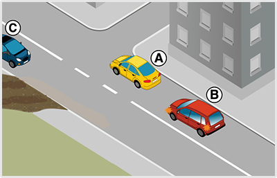
- 531. Szabályos-e, ha az ábrázolt útkereszteződésben a „B” jelű gépkocsi megelőzi az „A” jelű gépkocsit? #715024
- Nem.
- Igen.
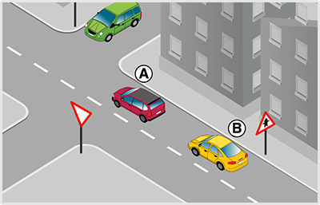
- 532. Szabályos-e, ha a ’B’ jelű gépkocsi megelőzi az ábrázolt útkereszteződésben az ’A’ jelű gépkocsit? #715128
- Igen, a ’B’ jelű gépkocsi a jelzőtáblával jelzett útkereszteződésben megelőzhet egy másik személygépkocsit.
- Nem, a ’B’ jelű gépkocsi csak az útkereszteződés után előzheti meg az előtte haladó, ’A’ jelű gépkocsit.
- Nem, a ‘B’ jelű gépkocsi ebben az útkereszteződésben csak állati erővel vontatott járművet előzhet.
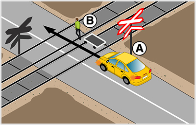
- 533. Szabad-e megelőznie a vasúti átjáróban az ’A’ jelű személygépkocsinak a kézikocsit? #715265
- Nem.
- Igen, mert sávon belül elfér mellette
- Igen, még a záróvonalon átlépve is.
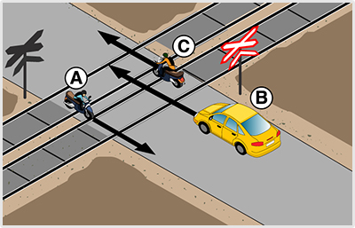
- 534. Szabad-e megelőznie a vasúti átjáróban a ’B’ jelű személygépkocsinak a ’C’ jelű kétkerekű motorkerékpárost? #715269
- Igen.
- Nem, mert itt mindig tilos az előzés.
- Csak akkor, ha az úttest közepén nincs záróvonal felfestve.
- 535. Szabad-e előzni be nem látható útkanyarulatban? #721403
- Általában nem.
- Igen.
- 536. Szabad-e előzni bukkanóban? #721404
- Általában nem.
- Igen.
- 537. Szabad-e előzni vasúti átjáróban és közvetlenül előtte? #721405
- Általában nem.
- Igen, de csak a lassan haladó mezőgazdasági vontatót.
- Igen, a kézikocsit mindig meg szabad előzni.
- 538. Milyen feltétel teljesülése esetén szabad előzni be nem látható útkanyarulatban? #721407
- Ha az úttesten egyirányú a forgalom.
- Ha az út főútvonal.
- Ha szemből nem látható közeledő jármű.
- 539. Milyen feltétel teljesülése esetén szabad előzni bukkanóban? #721408
- Ha az úttesten egyirányú a forgalom.
- Ha szemből nem látható közeledő jármű.
- Ha az út főútvonal.
- 540. Milyen feltételek teljesülése esetén szabad előzni be nem látható útkanyarulatban? #721409
- Ha záróvonal van felfestve, és az előzés nem jár annak érintésével.
- Ha szemből nem látható közeledő jármű.
- Ha terelővonal van felfestve, és gyér a forgalom.
- 541. Milyen feltételek teljesülése esetén szabad előzni bukkanóban? #721410
- Ha záróvonal van felfestve, és az előzés nem jár annak érintésével.
- Ha nincsenek útburkolati jelek felfestve.
- Ha a főútvonalon terelővonal van felfestve.
- 542. Szabad-e megelőzni vasúti átjáróban és közvetlenül előtte a kétkerekű segédmotoros kerékpárt? #721411
- Igen, gépjárművel.
- Igen, bármilyen járművel.
- Nem, semmilyen járművel sem szabad.
- 543. Segítenie kell-e járműve megelőzését a lassan haladó jármű vezetőjének? #721412
- Igen.
- Nem.
- 544. Szabad-e előzni körforgalmú úton? #721414
- Igen.
- Nem.
- 545. Szabad-e akadályozni az előzés végrehajtását? #721420
- Nem.
- Igen, de csak a sebesség kismértékű fokozásával.
- Igen, de csak balra húzódással.
- 546. Szabad-e előzni kijelölt gyalogos-átkelőhelyen? #721421
- Nem.
- Igen, ha nincs rajta gyalogosforgalom.
- Igen, de csak motorkerékpárral.
- 547. Szabad-e előzni villamost olyan megállóhely előtt, ahol az utasok le- és felszállása az úttestről, illetőleg az úttestre történik? #721422
- Nem.
- Igen.
- 548. Szabad-e előzni vasúti átjáróban személygépkocsival lassú járművet? #721427
- Nem.
- Igen.
- 549. Szabad-e előzni vasúti átjáróban személygépkocsival mopedautót? #721428
- Nem.
- Igen.
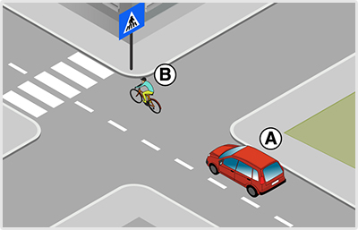
- 550. Mikor viselkedik szabályosan az ’A’ jelű gépkocsi vezetője az ábrán látható helyen? #721434
- Ha csak a kijelölt gyalogos-átkelőhelyet elhagyva előzi meg a ’B’ jelű kerékpárost.
- Ha megelőzi a kijelölt gyalogos-átkelőhelyen a ’B’ jelű kerékpárost, mivel ott nem tiltott az egy nyomon haladók előzése.
- Ha megelőzi a ’B’ jelű kerékpárost a kijelölt gyalogos-átkelőhelyen, ami szabályos, mivel éppen nem halad át rajta gyalogos.
- 551. Szabályos-e, ha az ábrázolt útkereszteződésben a ’B’ jelű gépkocsi megelőzi az előtte haladó ’A’ jelű gépkocsit? #721445
- Igen, mert olyan úton halad, amelyen elsőbbségét jelzőtábla jelzi.
- Nem, útkereszteződésben mindig tilos előzni.
- Nem, mert útkereszteződésben csak egy nyomon haladó járművet szabad megelőzni.
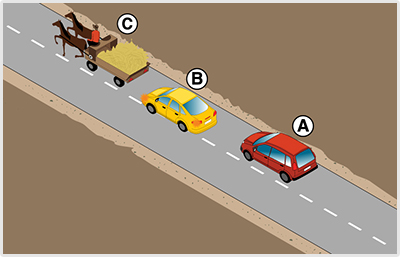
- 552. Ön az ’A’ jelű gépkocsit vezeti. Belekezdhet-e a ’B’ jelű személygépkocsi előzésébe? #721457
- Nem, mert a ’B’ jelű személygépkocsi már megkezdte a lovas kocsi előzését.
- Igen, mert a járműsorban harmadikként a legkedvezőbb pozícióban van az előzés megkezdéséhez.
- Igen, mert a ’B’ jelű személygépkocsi még nem tért át a menetirány szerinti bal oldalra.
- 553. Milyen magatartást kell tanúsítania az ’A’ jelű jármű vezetőjének az ábrázolt forgalmi helyzetben? #721465
- Az ’A’ jelű személygépkocsi vasúti átjáróban nem előzheti meg a kézikocsit.
- Az ’A’ jelű személygépkocsi ebben a vasúti átjáróban azért előzheti meg a kézikocsit, mert az átjáró többvágányos.
- Az ’A’ jelű személygépkocsi ebben a vasúti átjáróban a záróvonal ellenére is megelőzheti a kézikocsit, mert az csak nagyon lassan képes haladni.
- 554. Szabad-e kikerülni az úttesten álló járművet, ha ezzel zavarná a szemből érkező járművek forgalmát? #721584
- Nem.
- Igen, ha a manőver egyébként nem veszélyes.
- 555. Szabad-e kikerülést végezni, ha nem áll rendelkezésre megfelelő oldaltávolság? #721585
- Nem.
- Igen, ha a manőver egyébként veszélytelen.
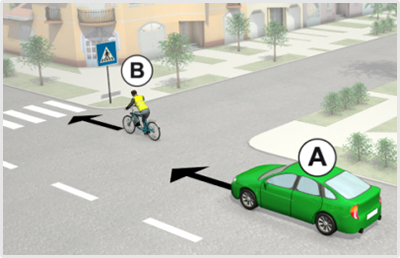
- 556. Szabad-e megelőznie az ’A’ jelű gépkocsi vezetőjének a ’B’ jelű kerékpárost az ábrázolt helyen? #722265
- Amennyiben az előzést a kijelölt gyalogos-átkelőhelyig nem tudja fejezni, akkor nem.
- Igen, minden esetben.
- 557. Mikor viselkedik szabályosan az ’A’ jelű gépkocsi vezetője az ábrán látható helyen? #722266
- Ha csak a kijelölt gyalogos-átkelőhelyet elhagyva előzi meg a ’B’ jelű kerékpárost.
- Ha megelőzi a kijelölt gyalogos-átkelőhelyen a ’B’ jelű kerékpárost, mivel ott nem tiltott az egy nyomon haladók előzése.
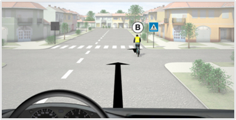
- 558. Ön a kormánykerékkel jelzett járművet vezeti. Szabad-e megelőznie a ’B’ jelű kerékpárost az ábrázolt helyen? #722274
- Amennyiben az előzést a kijelölt gyalogos-átkelőhelyig nem tudja fejezni, akkor nem.
- Igen, minden esetben.
- 559. Ön a kormánykerékkel jelzett járművet vezeti. Mikor viselkedik szabályosan az ábrán látható helyen? #722275
- Ha csak a kijelölt gyalogos-átkelőhelyet elhagyva előzi meg a ’B’ jelű kerékpárost.
- Ha megelőzi a kijelölt gyalogos-átkelőhelyen a ’B’ jelű kerékpárost, mivel ott nem tiltott az egy nyomon haladók előzése.
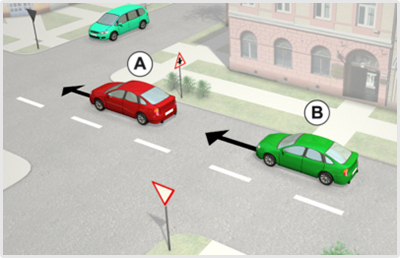
- 560. Szabályos-e, ha az ábrázolt útkereszteződésben a ’B’ jelű gépkocsi megelőzi az előtte haladó ’A’ jelű gépkocsit? #722283
- Igen, mert olyan úton halad, amelyen elsőbbségét jelzőtábla jelzi.
- Nem, útkereszteződésben mindig tilos előzni.
- Nem, mert útkereszteződésben csak egy nyomon haladó járművet szabad megelőzni.
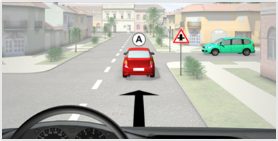
- 561. Ön a kormánykerékkel jelzett járművet vezeti. Szabályos-e, ha az ábrázolt útkereszteződésben megelőzi az Ön előtt haladó ’A’ jelű gépkocsit? #722291
- Igen, mert olyan úton halad, amelyen elsőbbségét jelzőtábla jelzi.
- Nem, útkereszteződésben mindig tilos előzni.
- Nem, mert útkereszteződésben csak egy nyomon haladó járművet szabad megelőzni.
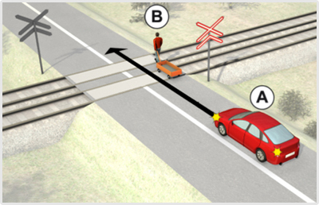
- 562. Melyik állítás igaz az ábrázolt forgalmi helyzetre? #722649
- Az ’A’ jelű jármű a vasúti átjáróban nem előzheti meg a kézikocsit.
- Az ’A’ jelű jármű a vasúti átjáróban megelőzheti a kézikocsit.
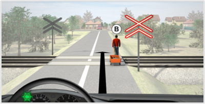
- 563. Ön a kormánykerékkel jelzett járművet vezeti. Melyik állítás igaz az ábrázolt forgalmi helyzetre? #722657
- Az ’A’ jelű járműszerelvény a vasúti átjáróban nem előzheti meg a kézikocsit.
- Az ’A’ jelű járműszerelvény a vasúti átjáróban megelőzheti a kézikocsit.
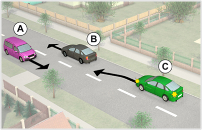
- 564. Ön az ’A’ jelű személygépkocsit vezeti. Van-e valamilyen kötelezettsége, ha azt látja, hogy a ’C’ jelű személygépkocsi a képen látható módon veszélyes előzésbe kezd? #723299
- Igen, lassítással és az úttest szélére húzódással mindent meg kell tennie, hogy ne történhessen baleset.
- Nincs, mert az előzés végrehajtásáért csak a ’C’ jelű személygépkocsi vezetője felelős.
- Nincs, mert ebben az esetben csak a ’B’ jelű személygépkocsi vezetője köteles lehúzódni.
- 565. Ön a ‘B’ jelű személygépkocsit vezeti. Van-e valamilyen kötelezettsége, ha azt látja, hogy a ’C’ jelű személygépkocsi a képen látható módon veszélyes előzésbe kezd? #723300
- Igen, pl. az úttest szélére húzódással mindent meg kell tennie, hogy ne történhessen baleset.
- Nincs, mert az előzés végrehajtásáért csak a ’C’ jelű személygépkocsi vezetője felelős.
- Nincs, mert ebben az esetben csak az ’A’ jelű személygépkocsi vezetője köteles lehúzódni.
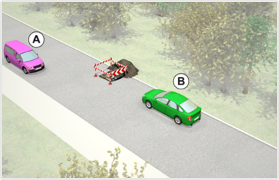
- 566. A képen látható helyzetben mi a szabályos elhaladás sorrendje? #723325
- A ’B’ jelű gépkocsi elsőbbséget ad az ’A’ jelű személygépkocsi részére.
- Az ’A’ jelű személygépkocsi elsőbbséget ad a ’B’ jelű gépkocsi részére.
- Kölcsönös udvariassággal megegyeznek az áthaladás sorrendjén.
- 567. A képen látható helyzetben melyik jármű tegye lehetővé a másik számára az elhaladást? #723326
- A ’B’ jelű jármű az 'A' jelű jármű részére.
- Az ’A’ jelű jármű a 'B' jelű jármű részére..
- 568. Ön a ’B’ jelű gépkocsit vezeti. Válassza ki a helyes állítást! #723327
- Elsőbbséget ad az ’A’ jelű személygépkocsi részére.
- Áthajt az útszűkületen, mert elsőbbsége van az ’A’ jelű személygépkocsival szemben.
- Kölcsönös udvariasság alapján kell eldönteni az áthaladási sorrendet.

- 569. A képen látható helyzetben mi a szabályos elhaladás sorrendje? #723328
- A ’B’ jelű gépkocsi elsőbbséget ad az ’A’ jelű személygépkocsi részére.
- Az ’A’ jelű személygépkocsi elsőbbséget ad a ’B’ jelű gépkocsi részére.
- Kölcsönös udvariassággal megegyeznek az áthaladás sorrendjén.
- 570. A képen látható helyzetben melyik jármű tegye lehetővé a másik számára az elhaladást? #723329
- A ’B’ jelű jármű az 'A' jelű jármű részére.
- Az ’A’ jelű jármű a 'B' jelű jármű részére.
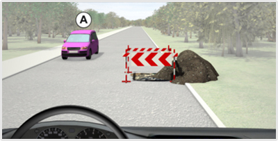
- 571. Ön a kormánykerékkel jelzett járművet vezeti. A képen látható helyzetben mi a szabályos elhaladás sorrendje? #723331
- Ön elsőbbséget ad az ’A’ jelű személygépkocsi részére.
- Az ’A’ jelű személygépkocsi elsőbbséget ad az Ön részére.
- Kölcsönös udvariassággal megegyeznek az áthaladás sorrendjén.
- 572. Ön a kormánykerékkel jelzett járművet vezeti. A képen látható helyzetben melyik jármű tegye lehetővé a másik számára az elhaladást? #723332
- Ön az 'A' jelű jármű részére.
- Az ’A’ jelű jármű az Ön részére.
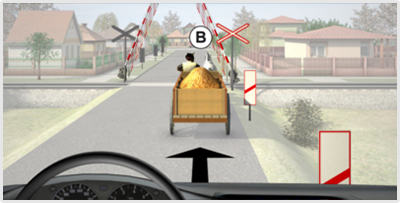
- 573. Ön a kormánykerékkel jelzett gépjárművet vezeti. Szabad-e megelőznie a vasúti átjáróban az állati erővel vontatott járművet? #723340
- Nem.
- Igen, mert nincs felfestve záróvonal.
- Igen, ha 25 km/h sebességnél lassabban halad az állati erővel vontatott jármű.
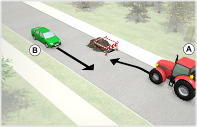
- 574. A képen látható helyzetben mi az egymás melletti elhaladás sorrendje? #723519
- Az ’A’ jelű mezőgazdasági vontató elsőbbséget ad a ’B’ jelű jármű részére.
- Az a ’B’ jelű jármű elsőbbséget ad az ’A’ jelű mezőgazdasági vontató részére.
- Kölcsönös udvariassággal megegyeznek az elhaladás sorrendjén.
- 575. Ön a ’B’ jelű járművet vezeti. Az úton lévő akadály melletti elhaladás kapcsán van-e elsőbbségadási kötelezettsége? #723520
- Nincs.
- Igen, van.
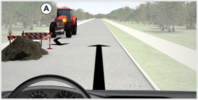
- 576. Ön a kormánykerékkel jelzett járművet vezeti. A képen látható helyzetben mi az egymás melletti elhaladás sorrendje? #723587
- Az ’A’ jelű mezőgazdasági vontató elsőbbséget ad az Ön által vezetett jármű részére.
- Ön a kormánykerékkel jelzett járművel elsőbbséget ad az ’A’ jelű mezőgazdasági vontató részére.
- Kölcsönös udvariassággal megegyeznek az elhaladás sorrendjén.
- 577. Ön a kormánykerékkel jelzett járművet vezeti. Az úton lévő akadály melletti elhaladás kapcsán van-e elsőbbségadási kötelezettsége? #723588
- Nincs.
- Igen, van.
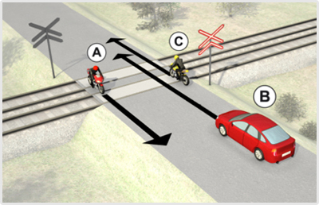
- 578. Szabad-e megelőznie a vasúti átjáróban a ’B’ jelű személygépkocsinak a ’C’ jelű kétkerekű motorkerékpárost? #723620
- Igen.
- Nem.
- Igen, de csak akkor, ha az úttest közepén nincs záróvonal felfestve.
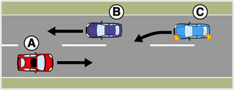
- 579. Ön az ’A’ jelű személygépkocsit vezeti. Van-e valamilyen kötelezettsége, ha azt látja, hogy a ’C’ jelű személygépkocsi a képen látható módon veszélyes előzésbe kezd? #723769
- Igen: lassítással és az úttest szélére húzódással mindent meg kell tennie, hogy ne történhessen baleset.
- Nincs, mert az előzés végrehajtásáért csak a ’C’ jelű személygépkocsi vezetője felelős.
- Nincs, mert ebben az esetben csak a ’B’ jelű személygépkocsi vezetője köteles lehúzódni.
- 580. Ön a ’C’ jelű személygépkocsit vezeti. Belekezdhet-e a ’B’ jelű személygépkocsi előzésébe a képen látható módon? #723771
- Nem, mert előzéskor nem zavarhatja a szemből érkező ’A’ jelű személygépkocsi közlekedését.
- Igen, mert ha elég széles az úttest, akkor elvárható, hogy a szemből érkező ’A’ jelű személygépkocsi az úttest szélére húzódással segítse az előzést.
- Igen, mert ezen a helyen még bőven elfér az ’A’ és a ’B’ jelű személygépkocsik között.
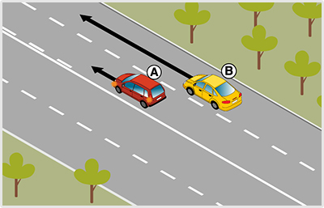
- 581. Ön a ’B’ jelű járművet vezeti a képen látható helyen. A külső forgalmi sávban közlekedve elhaladhat-e a belső forgalmi sávban balra kanyarodásra felkészülő ’A’ jelű személygépkocsi mellett? #723808
- Igen.
- Nem, csak akkor folytathatja az útját, ha a személygépkocsi már bekanyarodott.
- Csak akkor, ha nincs mögöttes forgalom.
- 582. Köteles-e a ’B’ jelű jármű vezetője irányjelzőjével jelezni, ha az ábrázolt helyzetben a külső forgalmi sávban elhalad az ’A’ jelű jármű mellett? #723809
- Nem, mivel nem történik irányváltoztatás.
- Igen, mert minden előzést irányjelzővel jelezni kell.